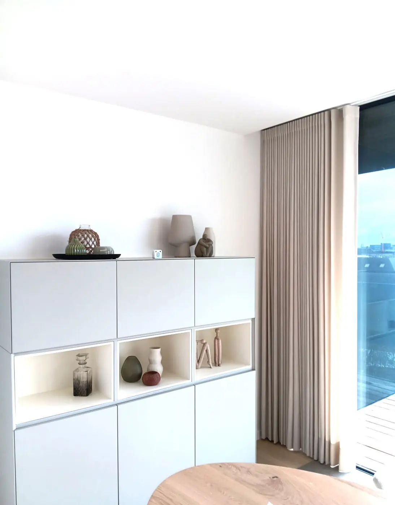
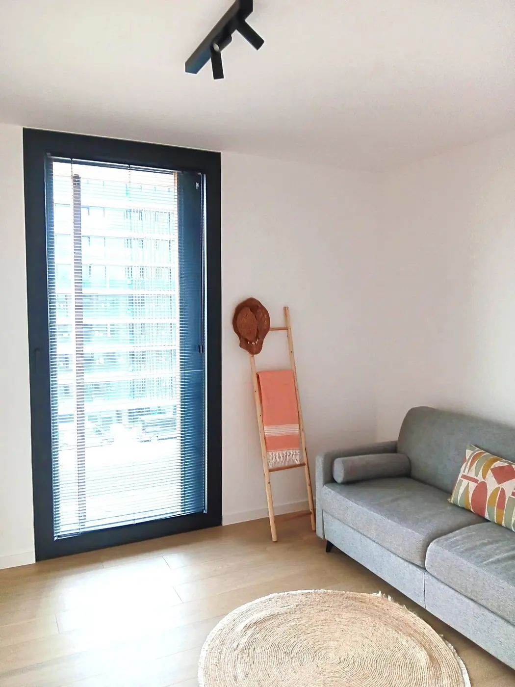
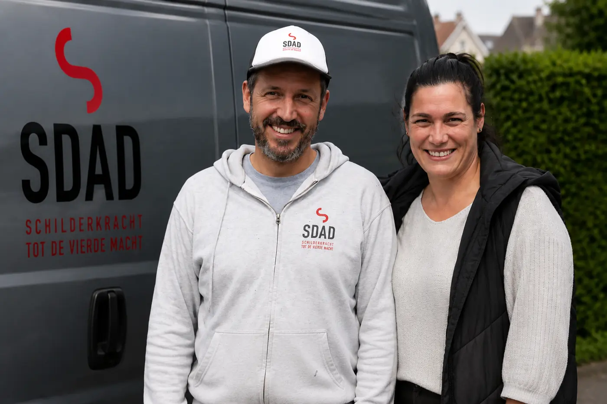
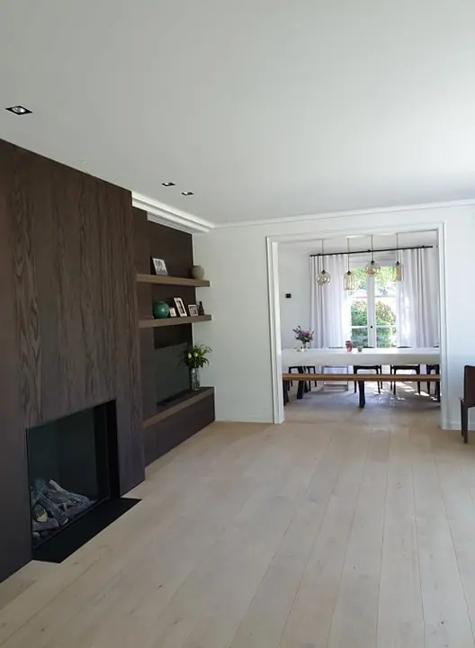

Een mooi resultaatbegint lang voor deeerste verflaag.
Wij begeleiden u van kleuradvies tot een perfect afgewerkt eindresultaat. Met persoonlijk advies, duidelijke communicatie en een ervaren team zorgen we voor een zorgeloos traject van begin tot einde.
- 25+jaar ervaring in het schildersvak
- 10jaar garantie op gevelschilderwerk* voorwaarden
- 18gemeenten in onze realisaties, in Oost- en West-Vlaanderen


Wat we voor u doen
Binnen- en buitenschilderwerken, decoratieve technieken en interieurafwerking met gordijnen en lamellen. Van kleuradvies tot oplevering.
 01
01Binnenschilderwerken
Van kleuradvies tot perfecte afwerking, alles voor een interieur dat klopt.
 02
02Buitenschilderwerken
Bescherming, uitstraling en vakmanschap voor uw gevel en buitenschrijnwerk.
 03
03Decoratieve technieken
Unieke afwerkingen met karakter, structuur en beleving.

04Gordijnen
Sfeer, privacy en afwerking perfect afgestemd op uw interieur.

05Lamellen
Modern, functioneel en perfect afgestemd op uw ruimte.
Schilderkracht tot de vierde macht
Zo creëren we ruimtes waar mensen graag wonen, werken en leven.
Advies & vakmanschap
Bij SDAD begeleiden we particulieren en bedrijven bij binnen- en buitenschilderwerken, decoratieve technieken en interieurafwerking (gordijnen en lamellen). Van kleuradvies tot oplevering zorgen we voor een resultaat waarin kwaliteit, uitstraling en vakmanschap samenkomen.
Met meer dan 25 jaar ervaring en een team van gespecialiseerde schilders beschikken we over de kennis en expertise om elk project professioneel uit te voeren. Of het nu gaat om een woning, kantoor, praktijkruimte, horecazaak of residentieel project, we denken mee over de juiste keuzes en zorgen voor een afwerking die jarenlang blijft overtuigen.
Wat ons onderscheidt, is onze persoonlijke aanpak. We luisteren naar uw wensen, adviseren waar nodig en communiceren helder gedurende het volledige traject. Zo weet u steeds waar u aan toe bent en kan u rekenen op een zorgeloze samenwerking van eerste gesprek tot oplevering.
De basis van dat vertrouwen is eenvoudig: we doen wat we zeggen en zeggen wat we doen.

Zo pakken we uw project aan
Een mooi resultaat begint lang voor de eerste verflaag. Van het eerste gesprek tot de oplevering weet u steeds waar u aan toe bent.
Plaatsbezoek
We komen vrijblijvend langs, luisteren naar uw wensen en bekijken samen de mogelijkheden en de staat van de ondergrond.
Kleuradvies
We denken mee over kleuren, materialen en afwerking, afgestemd op de ruimte, de lichtinval en uw stijl.
Offerte en planning
U ontvangt een duidelijke offerte en planning, zodat u precies weet wat u mag verwachten.
Voorbereiding en uitvoering
Eerst een correcte voorbereiding van de ondergrond, daarna een vakkundige uitvoering. Met duidelijke communicatie en netheid op de werf.
Oplevering
Een afwerking tot in de kleinste details en een zorgeloze samenwerking tot de oplevering. We doen wat we zeggen en zeggen wat we doen.
Recente realisaties
 Binnen · Buiten
Binnen · BuitenBabu@Gent
 Buiten
BuitenBuiten- & binnenschilderwerken kasteel Blauwhuis te Izegem
 Buiten
BuitenGevel villa te Knokke
 Binnen
BinnenLeefruimte te Marke

BinnenVilla van boven tot onder te Zwijnaarde
 Binnen
BinnenBroodbar Tastoe te Roeselare
 Buiten
BuitenSchilderen gevel te Kortrijk
 Binnen
BinnenBoetiek gastronomiek Culix te Merelbeke
Daarom kiezen klanten voor SDAD
- Ervaren vakmensen
- Persoonlijke aanpak
- Meedenkend advies
- Nakomen van afspraken & planning
- Capaciteit en flexibiliteit
- Tijdige en heldere offertes
- Duidelijke communicatie
- Netheid op de werf
Uw project in 4 stappen
Vertel ons kort wat u wilt laten doen. We reageren snel en plannen graag een vrijblijvend plaatsbezoek.
- Vrijblijvend plaatsbezoek
- Persoonlijk advies over kleuren en afwerking
- Een duidelijke offerte en planning
Liever meteen een afspraak? Plan zelf uw plaatsbezoek.
Actief in heel Oost- en West-Vlaanderen
Vanuit Izegem werken we voor particulieren en bedrijven in heel Oost- en West-Vlaanderen. We reageren snel op uw vraag en plannen graag een vrijblijvend plaatsbezoek bij u ter plaatse.
Hier werkten we al
Een mooi resultaat begint met een goed gesprek.
Tijdens een vrijblijvend plaatsbezoek luisteren we naar uw wensen, geven we professioneel advies en bekijken we samen de mogelijkheden voor uw schilderwerken of interieurafwerking.